[9-4] USART串口数据包 — 学习笔记
- 课程：江协科技《STM32入门教程-2023版 细致讲解 中文字幕》
- 视频：BV1th411z7sn?p=28，20:28（1228 秒）
- 素材：246 帧关键帧（每 5 秒，宽 1280px）+ PP-OCRv4 画面硬字幕 OCR（373 段）；关键截图 15 张随笔记收录（源图在
vidsum_out/stm32_p28/frames/，站内图片在assets/images/stm32-28/） - 字幕情况：该集 B 站没有 CC/AI 字幕，文本由画面烧录的中文字幕 OCR 得到（source=subtitle-ocr）；本集字幕里混入了录像软件/串口界面噪声（
Application running ...、Aiindat...、Anat...）与行首符号，这些不是老师口述内容，已剔除，错字已按画面校正（清单见文末「存疑」）。 - 本集定位：这是模块 9 的理论课（数据包）——00:00–03:35 只演示两个成品工程的现象（串口收发 HEX 数据包、串口收发文本数据包），03:35 起全是 PPT：HEX 数据包格式、文本数据包格式、两个接收状态机；全程没有一行 Keil 写码。片尾 20:27「接下来我们就来写程序，验证一下刚才所学的内容」——代码在 P29；本集无库函数、无代码，写法一律注明「在 P29」。
一句话结论
单个字节的收发已经会了，但实际模块（陀螺仪、温湿度等）一次要发多个字节，接收方可能从数据流的任意位置开始接收，于是 XYZXYZXYZ 这样的连续数据流分不清哪个字节是 X、哪个是 Y（数据错位/粘包）——这就需要把同一批数据「打包」成一个数据包、并在连续数据流中「分割」出来。本集给了两种最常用的数据包：① HEX 数据包——用包头 0xFF + 载荷 + 包尾 0xFE 界定，示例是固定包长（包头 + 固定 4 字节 + 包尾，如 FF 66 88 AB CD FE），收到 FF 就知道包来了、接着收 4 字节存数组、收到 FE 就置「收到一包」标志；② 文本数据包——用 @ 作包头、\r\n（回车换行两个字符）作包尾，载荷是字符串指令（如 @LED_ON），收到后按字符串判断执行，回传 LED_ON_OK；乱指令回 ERROR_COMMAND——这就是简单的人机交互。关键问题与解法：① 载荷本身可能等于包头/包尾（如数据就是 FF、FE）会误判 → 三种解法：限制载荷范围（如 X/Y/Z 限 0～100）、用固定包长并靠包头包尾对齐（收载荷时不判断包头包尾、只在收包头包尾时判断，几个包之后自然对齐）、增加包头包尾数量（包头 FF、FE，包尾 FD、FC，尽量选载荷不会出现的组合）；② 包头包尾不是都必须有——只留包头也能工作，但载荷全是 FF 时就分不清，加包尾更可靠；③ 固定 vs 可变包长——载荷可能与包头包尾重复时必须固定包长，不会重复则可用可变包长（1/3/4/10 字节随意，非常灵活）；另外任何数据类型（16/32 位整型、float/double、结构体）都能用 uint8_t* 指针当字节数组发。发送很简单（HEX 包＝填好数组用 Serial_SendArray；文本包＝写好字符串用 Serial_SendString——发送完全自主可控）；接收才复杂：每收到一个字节进一次中断、彼此独立，而数据包有前后关联（包头→数据→包尾），所以要用状态机：定义状态（画圈）→ 想清转移条件（画线）→ 按图编程。本集给的两个状态机：HEX 固定包长：S=0 等待包头（收 0xFF → S=1，否则自环）→ S=1 接收数据（未收够 4 个自环，收够 → S=2）→ S=2 等待包尾（收 0xFE → S=0，否则自环）；文本可变包长：S=0 等 @ → S=1 接收数据兼等包尾（收到 \r 不接收、转 S=2）→ S=2 等 \n``（收到 \n → S=0）。代码在下一集 P29。
0. 本集定位：理论课（数据包格式与收发思路），代码在 P29
- 本集是纯理论课：片头 3 分半只演示两个已经写好的成品工程，之后全是 PPT（HEX 数据包 / 文本数据包 / HEX 数据包接收 / 文本数据包接收 4 页 + 大量红笔批注），没有打开 Keil 写代码。
- 本集不讲的内容：没有校验和、没有 CRC、也没有长度字段——可变包长是靠包头/包尾界分的（与常见工业协议不同）；这些内容本集一概没有，笔记不编造。
- 片尾（20:27）：「数据包的定义、分类、优缺点和注意事项讲完了，接下来我们就来写程序，验证一下刚才所学的内容」——代码在 P29。
- 前情：P27 已经会了单字节收发（
Serial_SendByte/Serial_SendArray/Serial_SendString/中断接收 +Serial_GetRxFlag），本集是在此基础上讲数据包。
1. 片头两个成品工程
1.1 程序①：串口收发 HEX 数据包
- 工程
9-3 串口收发HEX数据包（帧可见工程名）；OLED 上面两行显示 Tx 数据包、下面两行显示 Rx 数据包；面包板上额外接了一个 PB1 按键控制发送； - 串口助手发送模式和接收模式都选 HEX 模式；
- 按一下 PB1：OLED 显示发出了一个数据包，串口助手也收到——数据包格式：以
FF为包头、FE为包尾，中间固定 4 个字节为数据；每按一次发一包，中间数据设置成递增变化（实际应用可替换成真实数据）； - 接收：在串口助手发送区手写一包，如
FF 66 88 AB CD FE发出去 → OLED 显示66 88 AB CD——包头FF和包尾FE只用于控制接收、不显示； - 换一组数据再发，接收也没问题——这就是串口收发 HEX 数据包的现象。
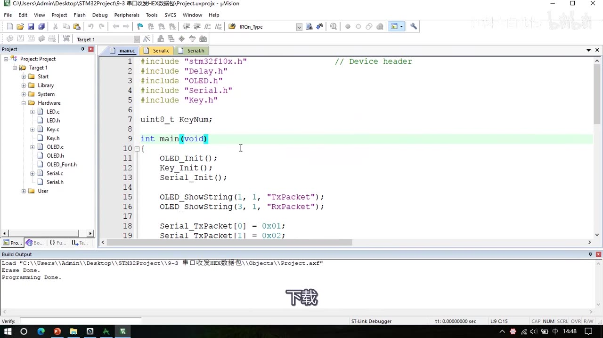
图 1：程序①的 main.c 预览——工程标题栏 9-3 串口收发HEX数据包；#include "stm32f10x.h"/"Delay.h"/"OLED.h"/"Serial.h"/"Key.h"、uint8_t KeyNum;、OLED_Init(); Key_Init(); Serial_Init();、OLED_ShowString(1, 1, "TxPacket")、OLED_ShowString(3, 1, "RxPacket")、Serial_TxPacket 数组的第 0、1 个元素赋 0x01、0x02；字幕「下载」
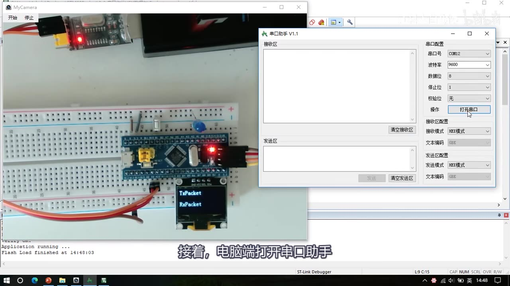
图 2：程序①现象——OLED 显示 TxPacket/RxPacket 两行标题，面包板上有 PB1 按键；右侧串口助手（COM12、9600、8、1、无，接收/发送均 HEX模式）；字幕「接着，电脑端打开串口助手」
1.2 程序②：串口收发文本数据包
- 面包板上再增加一个 LED 用于测试；串口助手发送模式和接收模式都选文本模式；
- 文本数据包格式：以
@符号为包头，中间是数据（规定好的指令），最后以换行符为包尾——「注意一定要打个换行，换行也是字符」（即\r\n）； - 发送
@LED_ON：OLED 显示接收到了LED_ON，STM32 回传字符串LED_ON_OK，LED 点亮； - 发送
@LED_OFF：回传LED_OFF_OK，LED 熄灭； - 随便给个指令：STM32 也能收到，但回传
ERROR_COMMAND（错误指令）——「这就是一个简单的利用串口进行人机交互的设计」。
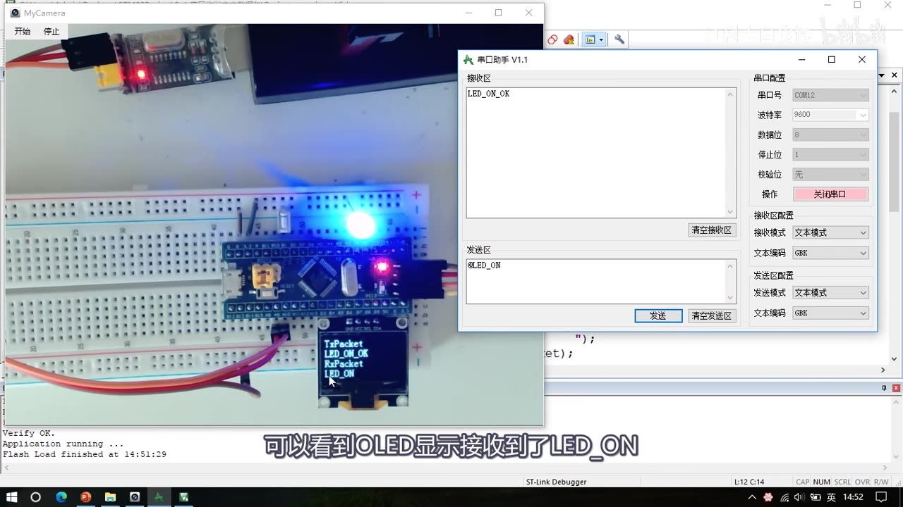
图 3：程序②现象——OLED 显示 TxPacket LED_ON_OK 与 RxPacket LED_ON；右侧串口助手接收区 LED_ON_OK、发送区 @LED_ON，收发均 文本模式；面包板上 LED 已点亮；字幕「可以看到OLED显示接收到了LED_ON」
2. 为什么需要数据包
- 数据包的作用：把一个个单独的数据「打包」起来，方便进行多字节的数据通信；
- P27 已经会了「发送一个字节、接收一个字节」，但实际应用中往往需要把多个字节打包成一个整体发送；
- 例如陀螺仪传感器用串口给 STM32 发数据：X 轴 1 个字节、Y 轴 1 个字节、Z 轴 1 个字节，3 个数据连续不断地发送；
- 问题：像
XYZXYZXYZ这样连续发时，接收方不知道哪个数据对应 X、哪个是 Y、哪个是 Z——因为接收方可能从任意位置开始接收，会出现数据错位； - 所以需要一种分割方式，把属于同一批的数据（X、Y、Z）分割成一个数据包；这样接收时就知道「数据包的第 1 个是 X、第 2 个是 Y、第 3 个是 Z」；
- 数据包的任务就是把同一批数据打包、并在连续数据流中分割出来，方便接收方识别；分割打包的方法可以自己发挥想象力设计，只要逻辑行得通。
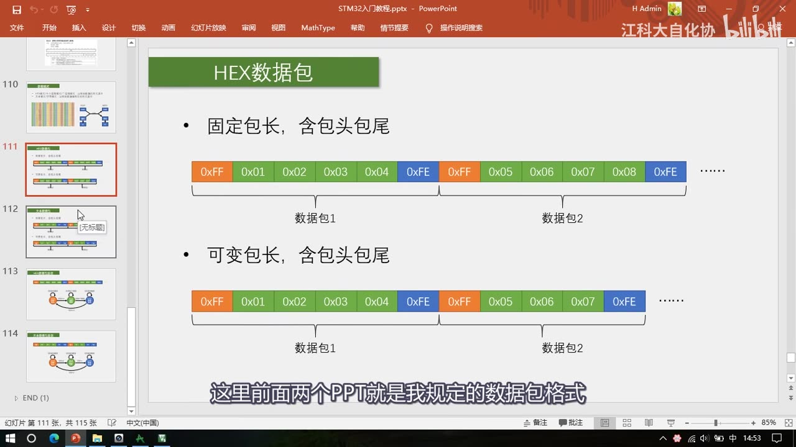
图 4：PPT「HEX数据包」——固定包长（0xFF 0x01 0x02 0x03 0x04 0xFE | 0xFF 0x05 0x06 0x07 0x08 0xFE …，标注「数据包1」「数据包2」）与可变包长（0xFF 0x01 0x02 0x03 0x04 0xFE | 0xFF 0x05 0x06 0x07 0xFE …）；字幕「这里前面两个PPT就是我规定的数据包格式」
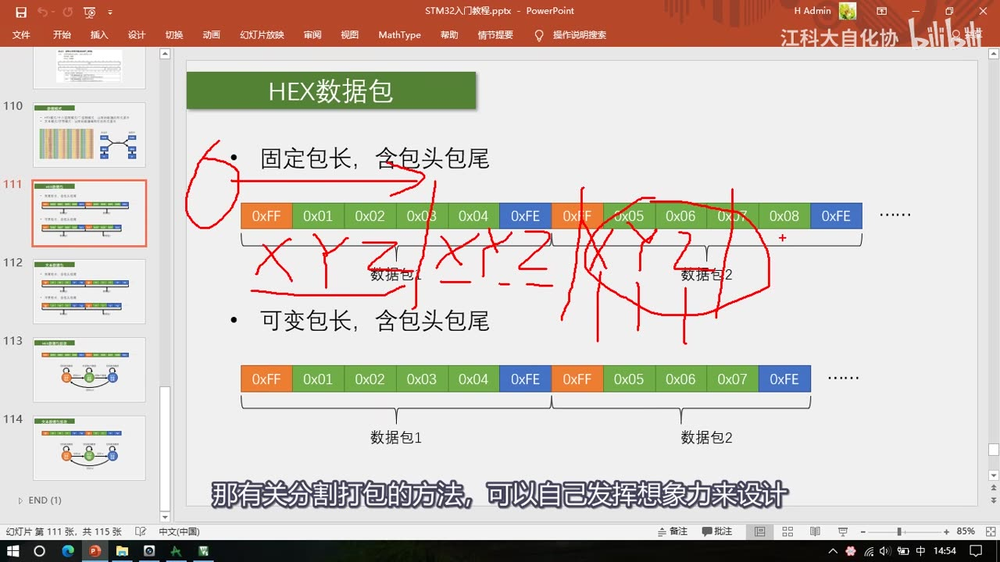
图 5：同一页上的红笔标注——把固定包长数据包 1 的 0x01 0x02 0x03 标成 X Y Z，并画出两个数据包的分界；字幕「那有关分割打包的方法，可以自己发挥想象力来设计」
3. HEX 数据包格式
- 本集规定的 HEX 数据包 = 额外添加包头包尾：包头
0xFF+ 载荷数据 + 包尾0xFE； - 两种形式：
- 固定包长、含包头包尾：每个数据包长度固定不变——例如「包头
0xFF+ 固定 4 字节数据 + 包尾0xFE」； - 可变包长、含包头包尾：每个数据包长度可以不一样——包头之后是变长数据，最后是包尾；
- 固定包长、含包头包尾：每个数据包长度固定不变——例如「包头
- 格式是用户自己规定的，也可以由模块厂家规定（买模块时对方给协议文档）；
- 接收逻辑：收到
0xFF就知道「数据包来了」→ 接着收到的 4 个字节当作数据包的第 1～4 个数据、存进数组 → 收到0xFE就置一个「收到一包」的标志位告诉程序；之后新数据包来了重复这个过程——这样就能在连续不断的数据流中分割出想要的数据包。
3.1 另一种分包思路（本集不采用）
- 也可以把数据包第一个数据的最高位置 1（其余数据最高位置 0）当标志位：收到最高位为 1 的数据，就认为是一包开始，紧跟的两个数据就是 Y 和 Z；
- 这种「用最高位当标志位」的方法实际也有应用（比如 UTF8 编码就是类似思路），但本节不采用——因为它破坏了原始数据，使用起来比较复杂；
- 本节用的是额外添加包头包尾的方式。
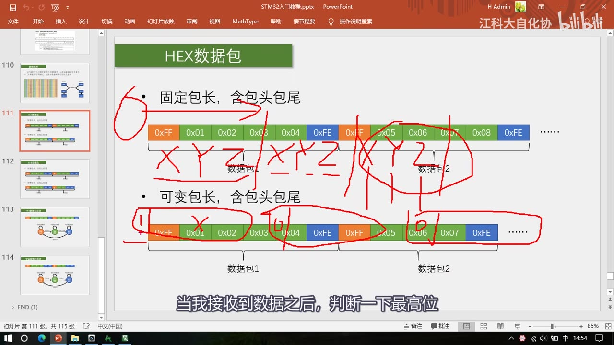
图 6：同一页的红笔标注（讲最高位法时）——把可变包长数据包 1 的 0x01 0x02 0x03 圈起来标 X Y Z，并在包头/包尾位置做标记；字幕「当我接收到数据之后，判断一下最高位」
4. 三个关键问题与解法
4.1 问题① 载荷与包头包尾重复
- 定义
FF为包头、FE为包尾——如果我传输的数据本身就是FF或FE呢？ 这个问题确实存在：载荷与包头包尾重复可能引起误判； - 解法① 限制载荷数据的范围：如果可以，发送时对数据限幅——比如 X/Y/Z 三个数据变化范围都是 0～100，那载荷里只发 0～100 的数据，就不会和包头包尾重复；
- 解法② 使用固定长度的数据包 + 对齐：如果无法避免重复，就尽量用固定长度数据包——因为载荷长度固定，只要通过包头包尾把数据对齐了，就能严格知道哪个位置应该是包头包尾、哪个位置应该是载荷；具体做法：接收载荷数据时不判断它是不是包头包尾，只有在接收包头包尾时才判断——经过几个数据包的对齐之后，剩下的数据包基本就不会出错了；
- 解法③ 增加包头包尾的数量：让包头包尾尽量呈现出载荷数据出现不了的状态——比如包头用
FF、FE，包尾用FD、FC，这样也能避免载荷与包头包尾重复。
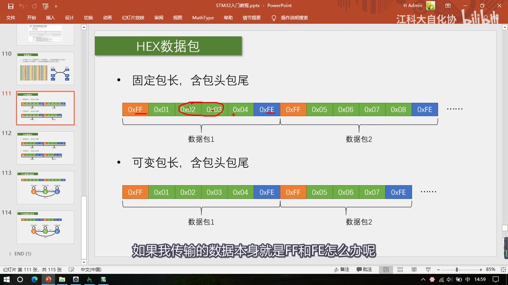
图 7：红圈圈出第二个数据包里的 0x02、0x03 两个字节（说明「如果这两个字节本身就是包头包尾的值会怎样」）；字幕「如果我传输的数据本身就是FF和FE怎么办呢」
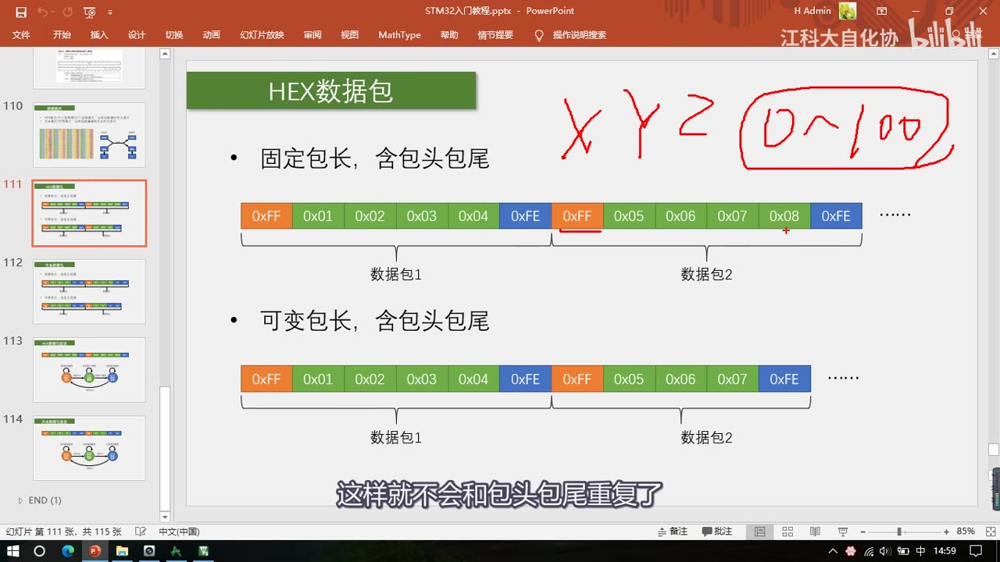
图 8：同一页上的红笔 X Y Z 0～100——解法①限幅：把 X/Y/Z 三个载荷的取值范围限制在 0～100，就不会和包头包尾重复；字幕「这样就不会和包头包尾重复了」
4.2 问题② 包头包尾不是都必须有
- 可以只要一个包头、把包尾删掉：格式变成「一个包头
FF+ 4 个数据」——检测到FF就开始接收，收够 4 个字节就置标志位、一个数据包接收完成； - 但这样载荷和包头重复的问题会更严重：最严重的情况是载荷全是
FF、包头也是FF，那就不知道哪个是包头了； - 而加上
FE作包尾之后，无论数据怎么变化，都能分辨出包头包尾——所以加包尾更可靠。
4.3 问题③ 固定包长 vs 可变包长
- 对 HEX 数据包：如果载荷会出现和包头包尾重复的情况 → 最好选择固定包长（避免接收错误）；如果又会重复、又选可变包长，数据很容易乱套；
- 如果载荷不会和包头包尾重复 → 可以选择可变包长：数据长度 4 位、3 位、1 位、10 位来回任意变都没问题——因为包头包尾是唯一的，出现包头就开始、出现包尾就结束，非常灵活。
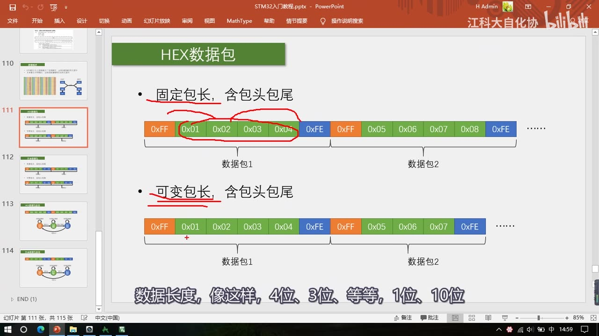
图 9：同一页上的红笔：圈出「固定包长」标题与数据包 1 的载荷 0x01～0x04，并划出「可变包长」标题；字幕「数据长度，像这样，4位、3位、等等，1位、10位」
4.4 各种数据类型怎么变成字节流
- 数据包都是一个字节一个字节组成的；如果想发送 16 位整型、32 位整型、float、double 甚至结构体，其实都没问题——因为它们内部本来就是一个字节一个字节组成的；
- 做法：用一个
uint8_t指针指向它，把它当作字节数组发送即可（指针教程里讲过）。
5. 文本数据包格式
- 文本数据包和 HEX 数据包分别对应「文本模式」和「HEX 模式」：HEX 包里数据是原始字节数据本身；文本包里每个字节经过一层编码/译码，最终表现出来是文本格式——但每个文本字符背后其实还是一个字节的 HEX 数据；
- 同样有固定包长和可变包长两种；
- 本集规定：以
@字符作为包头，以\r\n（回车、换行两个字符）作为包尾，中间是载荷（指令/数据字符串）；载荷里可以出现除包头包尾以外的任意字符； - 由于数据被译码成字符形式，有大量字符可以作为包头包尾——可以有效避免载荷与包头包尾重复，文本数据包基本不用担心重复问题，使用非常灵活（可变包长、各种字母符号数字随意用）；
- 接收到的载荷就是一个字符串，在软件里直接对字符串操作和判断，就能实现各种指令控制功能；
- 文本包的好处：表达意义明显——可以把字符串数据包直接打印到串口助手，「什么指令、什么数据一眼就能看明白」；通常以换行作包尾，这样打印时可以一行一行显示，非常方便。
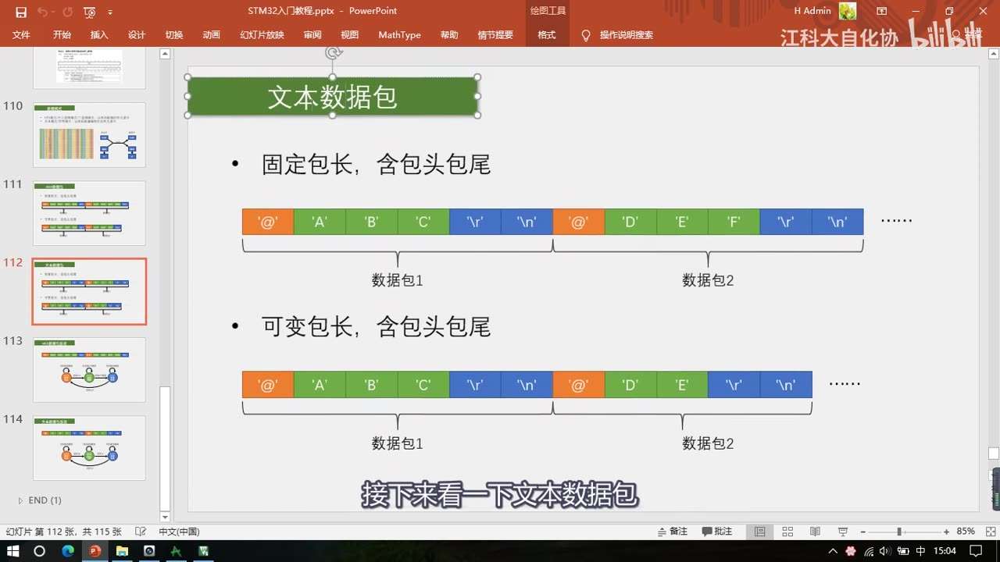
图 10：PPT「文本数据包」——固定包长（@ A B C \r \n | @ D E F \r \n …，标注数据包1/2）与可变包长（同样的样式）；字幕「接下来看一下文本数据包」
6. HEX 包 vs 文本包：优缺点对比
| 类型 | 优点 | 缺点 | 适用场景 |
|---|---|---|---|
| HEX 数据包 | 传输最直接、解析数据非常简单 | 灵活性不足；载荷容易与包头包尾重复 | 模块发送原始数据——如串口陀螺仪、温湿度传感器 |
| 文本数据包 | 数据直观易理解、非常灵活 | 解析效率低（要字符↔数据转换） | 输入指令做人机交互——如蓝牙模块的 AT 指令、CNC/3D 打印机的 G 代码 |
- 解析效率低的例子：发送一个数
100——HEX 数据包就是「一个字节 100」，完事；文本数据包得是 3 个字节的字符'1' '0' '0'，收到之后还要把字符转换成数据才能得到 100； - 结论：根据实际场景来选择和设计数据包格式。
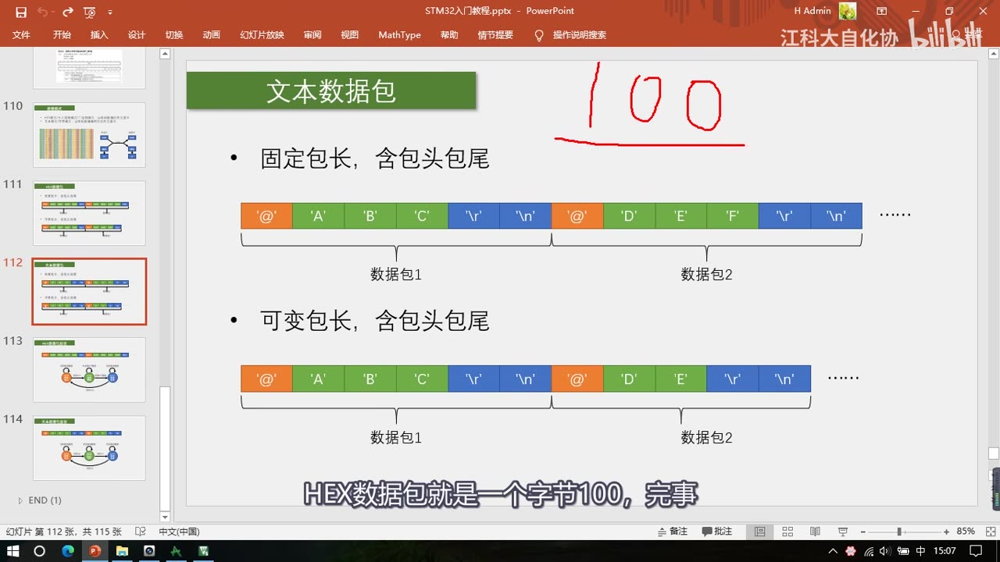
图 11：文本数据包页上的红笔「100」——用来对比 HEX 与文本的解析效率（HEX 一个字节、文本 3 个字符）；字幕「HEX数据包就是一个字节100，完事」
7. 发送流程：简单、自主可控
- HEX 数据包：定义一个数组、填好包头/数据/包尾，然后用 P27 写的
Serial_SendArray发出去就完事了； - 文本数据包：写一个字符串，调用
Serial_SendString发送就完事了； - 发送过程完全自主可控，想发啥就发啥——「写代码的时候也能感受到，串口发送比接收简单多了」。
8. 接收流程：状态机
8.1 为什么接收要用状态机
- 根据 P27 的代码我们知道：每收到一个字节，程序都会进一遍中断、在中断函数里拿到这一个字节，然后就得退出中断——每拿到一个数据都是一个独立的过程；
- 而数据包有很强的前后关联性：包头之后是数据、数据之后是包尾——三种位置需要不同的处理逻辑；
- 所以程序里需要一种能记住不同状态、在不同状态执行不同操作、还要能合理转移状态的机制——这种程序设计思维就叫「状态机」；
- 设计状态机时画一张状态转移图是必要的（本集 PPT 就画了图）。
8.2 固定包长 HEX 数据包的状态机（3 个状态）
- 定义 3 个状态：① 等待包头 ② 接收数据 ③ 等待包尾；每个状态用一个变量标记——PPT 里用变量
S，三个状态依次是S=0、S=1、S=2（「这一点类似于置标志位，只不过标志位只有 0 和 1，而状态机是多标志位状态的一种方式」）； - 流程：
- 最开始
S=0：收到数据进中断，按S=0进入「等待包头」逻辑，判断数据是不是包头FF——是FF就置S=1，退出中断；不是就保持S=0（数据包没对齐，继续等包头）； S=1接收数据：再收到数据就直接存进数组，另外用变量记录收了多少个；没收够 4 个就一直是接收状态，收够了就置S=2；S=2等待包尾：判断数据是不是FE——是就置S=0回到最初状态、开始下一个轮回；不是就继续等待包尾（因为数据与包头重复时包头位置可能判断错，加了包尾判断更能预防数据与包头重复造成的错误）。
- 最开始
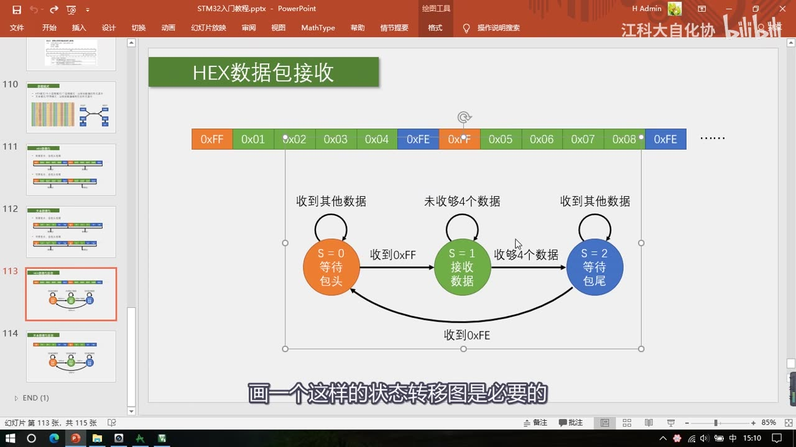
*图 12：PPT「HEX数据包接收」——上方数据包流（0xFF 0x01 0x02 0x03 0x04 0xFE | 0xFF 0x05 0x06 0x07 0x08 0xFE …），下方状态转移图：S=0 等待包头（收到其他数据自环）→ 收到 0xFF → S=1 接收数据（未收够 4 个数据自环）→ 收够 4 个数据 → S=2 等待包尾（收到其他数据自环）→ 收到 0xFE → 回到 S=0；字幕「画一个这样的状态转移图是必要的」*
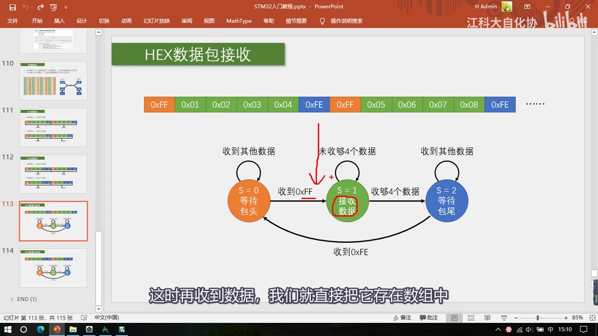
图 13：同一状态机图上的红笔——红色箭头指向 S=1 接收数据 并圈出该状态；字幕「这时再收到数据，我们就直接把它存在数组中」
8.3 可变包长文本数据包的状态机（3 个状态）
- 同样定义 3 个状态（PPT 变量
S）：S=0等待包头：判断收到的是不是规定的@符号，收到@就进入接收状态，否则保持等待（收到其他数据自环）；S=1接收数据、兼等包尾：因为是可变包长，接收数据的同时要时刻监视是不是收到包尾——收到一个数据先判断是不是\r：不是就正常接收存起来；是\r就不接收，同时跳到下一个状态 S=2；S=2等待包尾：这里判断是不是\n，收到\n就回到S=0，一包结束（收到其他数据自环）。
- 为什么要有第 3 个状态：因为这个数据包有两个包尾字符
\r、\n——收到\r时包尾还没结束，必须再等\n； - 推论（作者口述，非画面原文）：如果包尾只有一个字符，那两个状态就够——但接收数据和等待包尾需要在一个状态里同时进行（这是可变包长的特点）；
- 文本包基本不会出现数据错位：串口的包头包尾一般不会出现在数据中，所以不用担心错位。
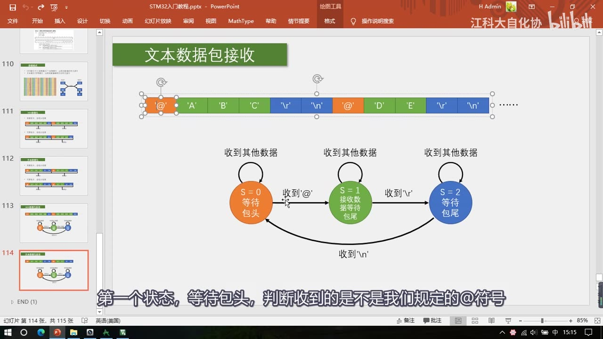
*图 14：PPT「文本数据包接收」——上方数据包流（@ A B C \r \n | @ D E F \r \n …），下方状态转移图：S=0 等待包头（收到其他数据自环）→ 收到 '@' → S=1 接收数据等待包尾（收到其他数据自环）→ 收到 '\r' → S=2 等待包尾（收到其他数据自环）→ 收到 '\n' → 回到 S=0；字幕「第一个状态，等待包头，判断收到的是不是我们规定的@符号」*
9. 状态机编程的通用方法
- 状态机是一种非常广泛的编程思路，很多地方都能用到；使用的基本步骤：
- 先根据项目要求定义状态——「画几个圈」；
- 然后考虑好各个状态在什么情况下会转移、如何转移——「画好线和转移条件」；
- 最后根据这个图来进行编程——「这样思维就会非常清晰了」；
- 应用例子：做菜单（按什么键、切换什么菜单、执行什么程序）；芯片内部逻辑（什么情况下进入待机、什么情况下进入工作状态）；
- 建议：研究一下状态机，对编程肯定有帮助。
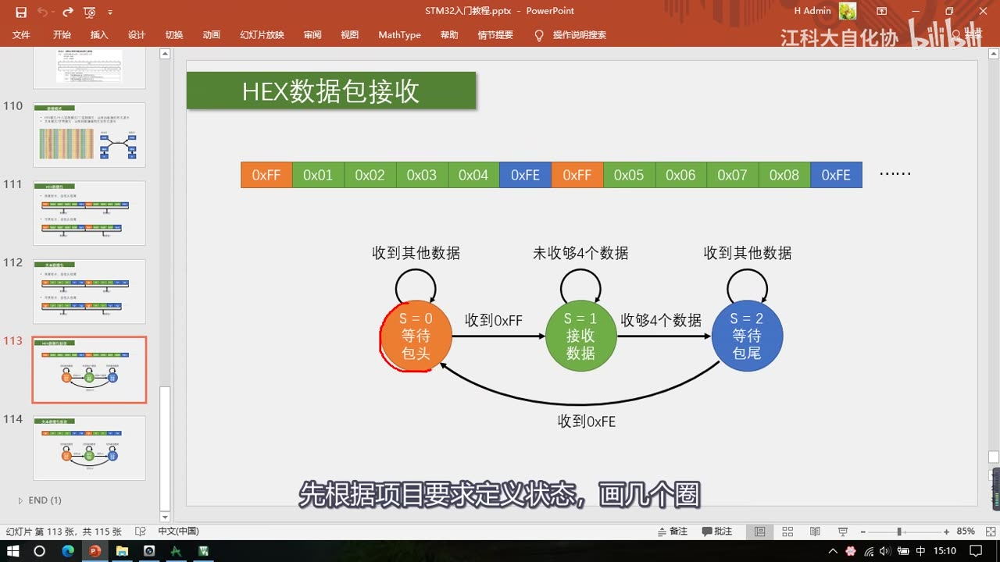
图 15：状态机图上的红笔——S=0 等待包头 被红笔圈出；字幕「先根据项目要求定义状态，画几个圈」
坑与易错点
- 载荷可能等于包头/包尾：数据本身是
FF/FE会误判——用限幅（如 0～100）、固定包长对齐、增加包头包尾数量（FF/FE + FD/FC）解决。 - 可变包长必须真的「不会重复」才用：会重复又用可变包长，数据很容易乱套。
- 包头包尾不是必须成对：只留包头也能工作，但载荷全 FF 时分不清包头，加包尾更可靠。
- 固定包长接收时不要判断载荷里的包头包尾：只在收包头/包尾时判断，载荷区一律当数据存——这样才能对齐。
- 状态机变量
S是 PPT 里的示意变量：本集没有给实际代码变量名，P29 代码里怎么命名以代码为准。 \r\n是两个字符：包尾有两个字符，所以文本包需要 3 个状态；单个包尾字符时 2 个状态就够（作者推论）。- 文本包发送时「一定要打换行」：换行本身也是字符，少了包尾接收方永远收不完一包。
- 文本包 S=1 状态下收到
\r时不要把它存进载荷：它是包尾的一部分。 - HEX 包收数据要另外记个数：状态机只记得「在收数据」，还要一个计数值判断是否收够 4 个。
- 数据包格式没有校验和/CRC/长度字段：本集的协议只靠包头包尾和固定长度界定，别把它当成通用工业协议。
- 发送简单、接收复杂：发送是主动可控的（填数组/写字符串即可），接收必须用状态机处理前后关联。
- 数据类型转字节流：16/32 位整型、float/double、结构体都能用
uint8_t*指针按字节数组发送。
时间轴
| 时间 | 内容 |
|---|---|
| 0:02 | 开场：本期继续学串口，学习数据包收发的思路和流程 |
| 0:10 | 先看现象：本小节共有两个代码 |
| 0:14 | 第一个是串口收发 HEX 数据包 |
| 0:18 | 第二个是串口收发文本数据包 |
| 0:24 | 程序①：OLED 上面两行显示 TX 数据包、下面两行显示 Rx 数据包 |
| 0:32 | USB 转串口模块接好，PB1 接了一个按键用于控制 |
| 0:40 | 打开串口助手，发送/接收都选 HEX 模式 |
| 0:47 | 按 PB1：OLED 显示发出的数据包，助手也收到 |
| 0:59 | 格式：FF 包头、FE 包尾，中间固定 4 个字节数据 |
| 1:10 | 每按一次发一包，中间数据递增变化 |
| 1:22 | 让 STM32 接收数据包：助手发送区发一包 |
| 1:30 | 以 FF 开头、中间 4 个用户数据，例如 66 88 AB CD |
| 1:44 | OLED 显示接收到 66 88 AB CD，包头包尾不显示 |
| 1:54 | 换数据再发，接收也没问题 |
| 2:08 | 程序②：串口收发文本数据包，面包板多接一个 LED |
| 2:22 | 发送/接收都选文本模式 |
| 2:30 | 文本包格式：@ 包头，中间是规定好的指令，换行符包尾 |
| 2:45 | 注意一定要打换行，换行也是字符 |
| 2:50 | 发送 @LED_ON：OLED 显示 LED_ON，回传 LED_ON_OK，LED 亮 |
| 3:05 | 发送 @LED_OFF：回传 LED_OFF_OK，LED 灭 |
| 3:18 | 随便给个指令：回传 ERROR_COMMAND |
| 3:28 | 这就是用串口进行人机交互的设计 |
| 3:35 | 接下来讲如何规定数据包格式以及如何收发 |
| 3:50 | 前两页 PPT 是数据包格式，后两页是接收思路 |
| 4:00 | 数据包的作用：把单独的数据打包，方便多字节通信 |
| 4:12 | 之前学的单字节收发没问题，但实际要把多字节打包发送 |
| 4:25 | 例子：陀螺仪 X/Y/Z 各一个字节连续发送 |
| 4:40 | 连续发送时接收方不知道哪个对应 X/Y/Z（数据错位） |
| 4:55 | 需要一种方式把 XYZ 这批数据分割成数据包 |
| 5:10 | 分割后就知道第一个数据是 X、第二个 Y、第三个 Z |
| 5:25 | 分割打包方法可以自己设计，逻辑行得通就行 |
| 5:35 | 一种思路：第一个数据最高位置 1，其余置 0 |
| 5:50 | 收到最高位为 1 就认为是包头 |
| 6:05 | 这种方法破坏原始数据，本节不采用 |
| 6:15 | 本节采用额外添加包头包尾的方式 |
| 6:25 | 列举两种格式：固定包长含包头包尾、可变包长含包头包尾 |
| 6:45 | 格式可以由用户规定，也可以由模块厂家规定 |
| 7:00 | 本集规定：固定 4 个字节数据，前加 0xFF 包头、后加 0xFE 包尾 |
| 7:20 | 收到 FF 知道包来了，接着收 4 个字节存数组 |
| 7:35 | 收到 FE 置标志位，告诉程序收到一包 |
| 7:50 | 新数据包来了重复这个过程，就在连续数据流里分割出数据包 |
| 8:05 | 研究第一个问题：包头包尾与载荷重复 |
| 8:20 | 如果数据本身就是 FF 和 FE 会引起误判 |
| 8:30 | 解法一：限制载荷数据范围（X/Y/Z 限 0～100） |
| 8:55 | 解法二：使用固定长度数据包并对齐 |
| 9:10 | 收载荷时不判断包头包尾，收包头包尾时才判断 |
| 9:25 | 解法三：增加包头包尾数量（FF/FE 包头、FD/FC 包尾） |
| 9:35 | 第二个问题：包头包尾不是都必须有 |
| 9:45 | 只留包头也能工作，但载荷全 FF 时无法分辨 |
| 9:55 | 加包尾后无论数据怎么变都能分辨包头包尾 |
| 10:05 | 第三个问题：固定包长还是可变包长 |
| 10:20 | 载荷会重复就选固定包长，不会重复才可选可变包长 |
| 10:35 | 可变包长时 1/3/4/10 字节随意变，非常灵活 |
| 10:56 | 最后：16/32 位整型、float、结构体都能用 uint8_t* 当字节数组发 |
| 11:20 | 接下来看文本数据包，对应文本模式 |
| 11:30 | 文本包里每个字节经过编码译码，表现成文本格式 |
| 11:45 | 同样有固定包长和可变包长两种 |
| 12:00 | 字符形式下可用大量字符做包头包尾，避免重复 |
| 12:15 | 本集规定 @ 包头、\r\n 包尾 |
| 12:16 | 载荷里可以出现除包头包尾外的任意字符 |
| 12:22 | 文本包基本不用担心重复问题，使用灵活 |
| 12:30 | 收到的载荷是字符串，可直接操作判断实现指令控制 |
| 12:42 | 文本包表达意义明显，可直接打印到串口助手 |
| 12:52 | 所以文本包通常以换行作包尾，方便一行行显示 |
| 13:07 | HEX 与文本各有优缺点：HEX 传输直接、解析简单 |
| 13:12 | HEX 适合模块发送原始数据（陀螺仪、温湿度） |
| 13:19 | HEX 缺点：灵活性不足、载荷易重复 |
| 13:25 | 文本优点：直观易理解、灵活，适合 AT 指令、G 代码 |
| 13:44 | 文本缺点：解析效率低（100 在 HEX 一个字节、文本 3 个字符） |
| 13:58 | 要根据实际场景选择数据包格式 |
| 14:12 | 发送很简单：HEX 用 SendArray、文本用 SendString |
| 14:38 | 发送完全自主可控，比接收简单多了 |
| 15:05 | 接收比较复杂，用状态机的方法讲两种接收流程 |
| 15:13 | 每收到一个字节进一次中断，是个独立过程 |
| 15:27 | 数据包有前后关联，需要记住状态的机制，即状态机 |
| 16:15 | 设计状态机要画状态转移图，固定包长 HEX 定义 3 个状态 |
| 16:30 | 用变量 S 标记：S=0 等待包头、S=1 接收数据、S=2 等待包尾 |
| 16:45 | S=0 时判断是不是 FF，是则 S=1，否则保持 S=0 |
| 17:25 | S=1 时把数据存数组并计数，收够 4 个置 S=2 |
| 17:42 | S=2 时判断是不是 FE，是则回 S=0 |
| 17:58 | 加包尾判断能预防数据与包头重复造成的错误 |
| 18:18 | 状态机是广泛的编程思路：定义状态画圈、想清转移条件画线、按图编程 |
| 18:42 | 例子：菜单切换、芯片待机/工作状态都是状态机 |
| 19:02 | 再看可变包长文本数据包的接收，同样 3 个状态 |
| 19:12 | S=0 等 @；S=1 接收数据兼等包尾，收到 \r 不接收转 S=2 |
| 19:20 | S=2 等 \n，收到 \n 回 S=0 |
| 19:35 | 因为有两个包尾字符，所以需要第三个状态 |
| 19:50 | 如果只有一个包尾字符，两个状态就够（推论） |
| 20:05 | 串口包头包尾一般不会出现在数据中，基本不会错位 |
| 20:15 | 到这里数据包的定义、分类、优缺点和注意事项就讲完了 |
| 20:23 | 结尾：接下来我们就来写程序，验证刚才所学的内容 |
存疑
- 本集文本来自画面硬字幕的 OCR（PP-OCRv4，source=subtitle-ocr，373 段），不是 ASR。混入了录像软件/串口界面噪声（
Application running ...、Aiindat...、Anat...）与行首符号（门），这些不是老师口述内容；典型 OCR 错字（本集实际出现）：串口→ 「串回/事口」、包头 FF→ 「包买F」、LED_ON_OK→ 「LEDON_OK」（缺下划线），已按画面和上下文校正。 - 本集无代码、无库函数：
Serial_SendPacket、状态机代码、Serial_GetRxPacket等均未出现（片头只是成品工程预览）；写法在 P29，本笔记不写配置/代码。 - 第二个工程的工程名未在帧中确认：只看到
9-3 串口收发HEX数据包的标题栏；文本数据包工程的工程名推测为9-4 串口收发文本数据包，但本集没有帧证据——本笔记只写「文本数据包工程」，未当作已确认事实。 - 本集没有校验和 / CRC / 长度字段：协议只靠包头包尾 + 固定长度界定，可变包长靠包头包尾分割；与常见工业协议不同，笔记没有补编校验内容。
- 状态机变量
S是 PPT 示意变量（S=0/1/2）：本集没有出现实际代码变量名（如 RxState 之类），P29 代码里以实际命名为准。 - 「包尾
\r\n两字符 → 3 个状态、单字符包尾 → 2 个状态」是作者口述推论（「如果只有一个包尾，那在出现包尾之后就可以直接回到初始状态，只需要两个状态就行」），非画面原文，本笔记按推论标注。 - 现象只在片头 0:00–3:35 演示：程序①OLED 只显示 2 行 TX + 2 行 RX（每包 4 字节），程序②显示字符串；本集后面没有回看现象。